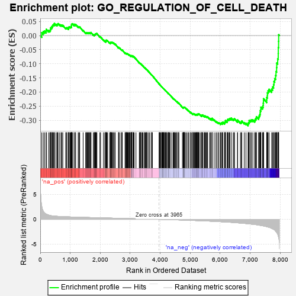
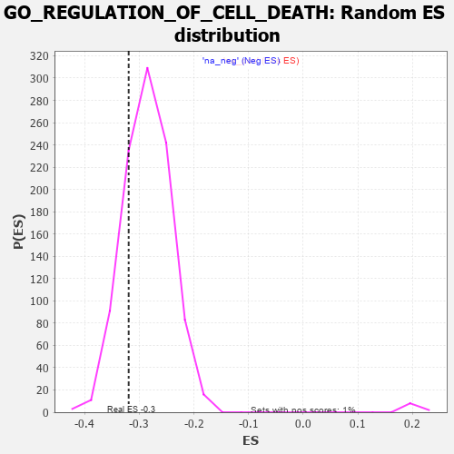

| | | Dataset | 7d |
| Phenotype | NoPhenotypeAvailable |
| Upregulated in class | na_neg |
| GeneSet | GO_REGULATION_OF_CELL_DEATH |
| Enrichment Score (ES) | -0.3194189 |
| Normalized Enrichment Score (NES) | -1.1199982 |
| Nominal p-value | 0.1989899 |
| FDR q-value | 0.7313237 |
| FWER p-Value | 1.0 |
Table: GSEA Results Summary

Fig 1: Enrichment plot: GO_REGULATION_OF_CELL_DEATH
Profile of the Running ES Score & Positions of GeneSet Members on the Rank Ordered List
| PROBE | GENE SYMBOL | GENE_TITLE | RANK IN GENE LIST | RANK METRIC SCORE | RUNNING ES | CORE ENRICHMENT | | 1 | TGFB3 | | | 49 | 2.654 | 0.0101 | No |
| 2 | TRIM2 | | | 100 | 1.628 | 0.0137 | No |
| 3 | CASP6 | | | 145 | 1.300 | 0.0161 | No |
| 4 | WNT16 | | | 198 | 1.072 | 0.0160 | No |
| 5 | BCL3 | | | 202 | 1.047 | 0.0221 | No |
| 6 | HGF | | | 276 | 0.870 | 0.0180 | No |
| 7 | KLF11 | | | 318 | 0.788 | 0.0176 | No |
| 8 | DLL1 | | | 337 | 0.760 | 0.0199 | No |
| 9 | DAPK2 | | | 343 | 0.754 | 0.0240 | No |
| 10 | GSK3A | | | 351 | 0.745 | 0.0277 | No |
| 11 | AXIN2 | | | 383 | 0.713 | 0.0281 | No |
| 12 | BAX | | | 387 | 0.711 | 0.0321 | No |
| 13 | ALX4 | | | 413 | 0.686 | 0.0331 | No |
| 14 | RAD9A | | | 418 | 0.681 | 0.0369 | No |
| 15 | RRN3 | | | 438 | 0.667 | 0.0385 | No |
| 16 | WRN | | | 469 | 0.649 | 0.0387 | No |
| 17 | LRP1 | | | 470 | 0.648 | 0.0427 | No |
| 18 | HTRA2 | | | 527 | 0.621 | 0.0393 | No |
| 19 | NLE1 | | | 565 | 0.609 | 0.0382 | No |
| 20 | APEX1 | | | 577 | 0.604 | 0.0405 | No |
| 21 | PITX3 | | | 594 | 0.596 | 0.0422 | No |
| 22 | NOC2L | | | 647 | 0.578 | 0.0390 | No |
| 23 | MRE11 | | | 693 | 0.560 | 0.0366 | No |
| 24 | ID1 | | | 719 | 0.555 | 0.0368 | No |
| 25 | ELK1 | | | 752 | 0.545 | 0.0360 | No |
| 26 | SAP18 | | | 850 | 0.519 | 0.0266 | No |
| 27 | IGBP1 | | | 869 | 0.514 | 0.0274 | No |
| 28 | HMGB2 | | | 892 | 0.507 | 0.0277 | No |
| 29 | PDCD4 | | | 941 | 0.497 | 0.0245 | No |
| 30 | PTPA | | | 947 | 0.497 | 0.0270 | No |
| 31 | CCND2 | | | 949 | 0.496 | 0.0299 | No |
| 32 | ZPR1 | | | 967 | 0.491 | 0.0308 | No |
| 33 | DEDD2 | | | 999 | 0.484 | 0.0297 | No |
| 34 | PSMG2 | | | 1018 | 0.480 | 0.0304 | No |
| 35 | ING3 | | | 1039 | 0.476 | 0.0307 | No |
| 36 | AKT1 | | | 1040 | 0.476 | 0.0337 | No |
| 37 | YAP1 | | | 1041 | 0.475 | 0.0366 | No |
| 38 | TAF9 | | | 1046 | 0.475 | 0.0391 | No |
| 39 | MEF2C | | | 1054 | 0.473 | 0.0411 | No |
| 40 | AIFM1 | | | 1072 | 0.469 | 0.0418 | No |
| 41 | SRC | | | 1128 | 0.459 | 0.0375 | No |
| 42 | NCK2 | | | 1131 | 0.458 | 0.0401 | No |
| 43 | ERCC3 | | | 1173 | 0.451 | 0.0375 | No |
| 44 | TFDP1 | | | 1180 | 0.450 | 0.0396 | No |
| 45 | CDC73 | | | 1265 | 0.436 | 0.0313 | No |
| 46 | PARL | | | 1290 | 0.432 | 0.0308 | No |
| 47 | THOC6 | | | 1316 | 0.426 | 0.0302 | No |
| 48 | RBM10 | | | 1430 | 0.404 | 0.0180 | No |
| 49 | INHBB | | | 1514 | 0.388 | 0.0096 | No |
| 50 | SON | | | 1538 | 0.385 | 0.0090 | No |
| 51 | SOS1 | | | 1547 | 0.384 | 0.0103 | No |
| 52 | FZD1 | | | 1574 | 0.379 | 0.0093 | No |
| 53 | ERP29 | | | 1589 | 0.376 | 0.0098 | No |
| 54 | BIRC8 | | | 1615 | 0.372 | 0.0088 | No |
| 55 | CDK4 | | | 1626 | 0.370 | 0.0098 | No |
| 56 | DDB1 | | | 1642 | 0.366 | 0.0101 | No |
| 57 | BACE1 | | | 1673 | 0.360 | 0.0085 | No |
| 58 | WWOX | | | 1688 | 0.359 | 0.0089 | No |
| 59 | HYOU1 | | | 1692 | 0.358 | 0.0107 | No |
| 60 | LRP5 | | | 1769 | 0.342 | 0.0029 | No |
| 61 | FNIP1 | | | 1798 | 0.338 | 0.0014 | No |
| 62 | ABR | | | 1812 | 0.335 | 0.0018 | No |
| 63 | MSH2 | | | 1819 | 0.334 | 0.0031 | No |
| 64 | NOA1 | | | 1832 | 0.332 | 0.0036 | No |
| 65 | GATA4 | | | 1837 | 0.330 | 0.0051 | No |
| 66 | TCF7 | | | 1848 | 0.328 | 0.0058 | No |
| 67 | SMAD4 | | | 1860 | 0.326 | 0.0064 | No |
| 68 | NUP62 | | | 1871 | 0.324 | 0.0071 | No |
| 69 | PAK3 | | | 1889 | 0.322 | 0.0069 | No |
| 70 | GPX4 | | | 1989 | 0.306 | -0.0041 | No |
| 71 | RAF1 | | | 2011 | 0.303 | -0.0050 | No |
| 72 | BMP7 | | | 2107 | 0.290 | -0.0156 | No |
| 73 | DDX42 | | | 2151 | 0.284 | -0.0194 | No |
| 74 | SYK | | | 2186 | 0.278 | -0.0221 | No |
| 75 | MEIS3 | | | 2188 | 0.278 | -0.0205 | No |
| 76 | C1QBP | | | 2189 | 0.278 | -0.0188 | No |
| 77 | UTP11 | | | 2195 | 0.277 | -0.0177 | No |
| 78 | ATAD5 | | | 2197 | 0.277 | -0.0161 | No |
| 79 | TRAP1 | | | 2219 | 0.274 | -0.0172 | No |
| 80 | CREB1 | | | 2243 | 0.269 | -0.0185 | No |
| 81 | REST | | | 2308 | 0.259 | -0.0252 | No |
| 82 | ANO6 | | | 2339 | 0.255 | -0.0276 | No |
| 83 | FAF1 | | | 2340 | 0.255 | -0.0260 | No |
| 84 | DOCK8 | | | 2341 | 0.254 | -0.0244 | No |
| 85 | MIF | | | 2357 | 0.252 | -0.0248 | No |
| 86 | SIN3A | | | 2361 | 0.251 | -0.0236 | No |
| 87 | PPID | | | 2376 | 0.249 | -0.0239 | No |
| 88 | HIPK2 | | | 2389 | 0.247 | -0.0239 | No |
| 89 | OMA1 | | | 2408 | 0.244 | -0.0248 | No |
| 90 | MET | | | 2430 | 0.240 | -0.0260 | No |
| 91 | KDM1A | | | 2447 | 0.237 | -0.0266 | No |
| 92 | ZC3H8 | | | 2486 | 0.229 | -0.0302 | No |
| 93 | MELK | | | 2499 | 0.227 | -0.0303 | No |
| 94 | PDE12 | | | 2608 | 0.211 | -0.0431 | No |
| 95 | VAV3 | | | 2614 | 0.210 | -0.0425 | No |
| 96 | BAG3 | | | 2620 | 0.209 | -0.0418 | No |
| 97 | MITF | | | 2659 | 0.205 | -0.0455 | No |
| 98 | PHB2 | | | 2712 | 0.197 | -0.0511 | No |
| 99 | SLIT2 | | | 2724 | 0.195 | -0.0513 | No |
| 100 | DIP2A | | | 2732 | 0.193 | -0.0510 | No |
| 101 | BECN1 | | | 2828 | 0.179 | -0.0623 | No |
| 102 | PA2G4 | | | 2840 | 0.177 | -0.0626 | No |
| 103 | NR2E1 | | | 2844 | 0.177 | -0.0619 | No |
| 104 | DCPS | | | 2873 | 0.170 | -0.0645 | No |
| 105 | DAPK3 | | | 2880 | 0.169 | -0.0642 | No |
| 106 | PDCD5 | | | 2885 | 0.169 | -0.0637 | No |
| 107 | FGFR2 | | | 2895 | 0.167 | -0.0638 | No |
| 108 | RBM5 | | | 2910 | 0.164 | -0.0646 | No |
| 109 | ACVR1 | | | 2932 | 0.161 | -0.0664 | No |
| 110 | BTK | | | 2958 | 0.156 | -0.0687 | No |
| 111 | MTCH1 | | | 2966 | 0.155 | -0.0686 | No |
| 112 | RRP1B | | | 2986 | 0.152 | -0.0702 | No |
| 113 | UNC5C | | | 2997 | 0.150 | -0.0705 | No |
| 114 | WNT4 | | | 3023 | 0.146 | -0.0729 | No |
| 115 | PIAS4 | | | 3034 | 0.145 | -0.0733 | No |
| 116 | LEF1 | | | 3037 | 0.144 | -0.0727 | No |
| 117 | UFL1 | | | 3041 | 0.144 | -0.0722 | No |
| 118 | BIRC6 | | | 3047 | 0.143 | -0.0719 | No |
| 119 | MAEA | | | 3048 | 0.143 | -0.0710 | No |
| 120 | HDAC1 | | | 3086 | 0.138 | -0.0750 | No |
| 121 | CHP1 | | | 3089 | 0.138 | -0.0744 | No |
| 122 | TIGAR | | | 3091 | 0.138 | -0.0737 | No |
| 123 | LHX3 | | | 3092 | 0.138 | -0.0728 | No |
| 124 | GPX1 | | | 3109 | 0.135 | -0.0741 | No |
| 125 | OGG1 | | | 3135 | 0.132 | -0.0765 | No |
| 126 | TRIO | | | 3192 | 0.123 | -0.0830 | No |
| 127 | SMAD3 | | | 3303 | 0.105 | -0.0968 | No |
| 128 | PARP2 | | | 3316 | 0.103 | -0.0977 | No |
| 129 | CFDP1 | | | 3332 | 0.099 | -0.0990 | No |
| 130 | UBE2O | | | 3348 | 0.097 | -0.1004 | No |
| 131 | TLDC2 | | | 3349 | 0.097 | -0.0998 | No |
| 132 | DDX3X | | | 3388 | 0.091 | -0.1042 | No |
| 133 | MED1 | | | 3405 | 0.089 | -0.1057 | No |
| 134 | SARM1 | | | 3432 | 0.086 | -0.1086 | No |
| 135 | LDHA | | | 3479 | 0.080 | -0.1141 | No |
| 136 | CDK5 | | | 3480 | 0.080 | -0.1136 | No |
| 137 | UFM1 | | | 3506 | 0.077 | -0.1164 | No |
| 138 | HDAC3 | | | 3528 | 0.072 | -0.1187 | No |
| 139 | PIN1 | | | 3543 | 0.069 | -0.1201 | No |
| 140 | PRDX5 | | | 3547 | 0.068 | -0.1200 | No |
| 141 | LCMT1 | | | 3576 | 0.063 | -0.1233 | No |
| 142 | CBL | | | 3621 | 0.056 | -0.1287 | No |
| 143 | FIS1 | | | 3654 | 0.051 | -0.1326 | No |
| 144 | NF1 | | | 3713 | 0.040 | -0.1399 | No |
| 145 | HSF1 | | | 3718 | 0.039 | -0.1402 | No |
| 146 | DAXX | | | 3722 | 0.038 | -0.1403 | No |
| 147 | CCAR1 | | | 3737 | 0.036 | -0.1419 | No |
| 148 | SOS2 | | | 3963 | 0.000 | -0.1713 | No |
| 149 | IGF1R | | | 3970 | -0.002 | -0.1721 | No |
| 150 | EYA1 | | | 3987 | -0.006 | -0.1742 | No |
| 151 | VPS35 | | | 3989 | -0.006 | -0.1743 | No |
| 152 | PARP1 | | | 4014 | -0.010 | -0.1773 | No |
| 153 | ACTN1 | | | 4050 | -0.016 | -0.1818 | No |
| 154 | ATG5 | | | 4051 | -0.016 | -0.1817 | No |
| 155 | SFRP2 | | | 4065 | -0.018 | -0.1833 | No |
| 156 | CSF1 | | | 4074 | -0.019 | -0.1842 | No |
| 157 | DDX20 | | | 4083 | -0.021 | -0.1851 | No |
| 158 | PDE8A | | | 4097 | -0.023 | -0.1867 | No |
| 159 | TRAF1 | | | 4104 | -0.024 | -0.1873 | No |
| 160 | MTOR | | | 4114 | -0.025 | -0.1883 | No |
| 161 | ABL1 | | | 4125 | -0.027 | -0.1895 | No |
| 162 | WNK3 | | | 4153 | -0.034 | -0.1928 | No |
| 163 | HYPK | | | 4154 | -0.034 | -0.1926 | No |
| 164 | PDX1 | | | 4179 | -0.038 | -0.1955 | No |
| 165 | AP2B1 | | | 4185 | -0.039 | -0.1959 | No |
| 166 | TIMP1 | | | 4209 | -0.043 | -0.1986 | No |
| 167 | FHL2 | | | 4222 | -0.046 | -0.1999 | No |
| 168 | PCID2 | | | 4258 | -0.051 | -0.2042 | No |
| 169 | NRBP2 | | | 4274 | -0.055 | -0.2058 | No |
| 170 | PSME3 | | | 4280 | -0.056 | -0.2061 | No |
| 171 | WNT11 | | | 4282 | -0.056 | -0.2059 | No |
| 172 | BAG4 | | | 4314 | -0.061 | -0.2095 | No |
| 173 | OPA1 | | | 4330 | -0.065 | -0.2111 | No |
| 174 | ARF4 | | | 4383 | -0.073 | -0.2174 | No |
| 175 | MYDGF | | | 4429 | -0.081 | -0.2228 | No |
| 176 | SYVN1 | | | 4454 | -0.085 | -0.2254 | No |
| 177 | NDRG1 | | | 4456 | -0.085 | -0.2250 | No |
| 178 | LRRK2 | | | 4467 | -0.087 | -0.2258 | No |
| 179 | HIP1 | | | 4485 | -0.092 | -0.2274 | No |
| 180 | ILK | | | 4510 | -0.096 | -0.2300 | No |
| 181 | NTRK2 | | | 4543 | -0.104 | -0.2335 | No |
| 182 | APC | | | 4558 | -0.107 | -0.2347 | No |
| 183 | BAG6 | | | 4563 | -0.108 | -0.2345 | No |
| 184 | GATA3 | | | 4614 | -0.120 | -0.2403 | No |
| 185 | ATOH1 | | | 4615 | -0.121 | -0.2395 | No |
| 186 | DLG5 | | | 4619 | -0.121 | -0.2392 | No |
| 187 | PDIA3 | | | 4740 | -0.147 | -0.2539 | No |
| 188 | PLCG1 | | | 4770 | -0.151 | -0.2568 | No |
| 189 | PDE1A | | | 4773 | -0.152 | -0.2561 | No |
| 190 | PIM1 | | | 4776 | -0.152 | -0.2554 | No |
| 191 | RTN4 | | | 4783 | -0.154 | -0.2552 | No |
| 192 | PIM2 | | | 4789 | -0.155 | -0.2549 | No |
| 193 | SRPK2 | | | 4790 | -0.155 | -0.2539 | No |
| 194 | TERT | | | 4801 | -0.157 | -0.2543 | No |
| 195 | MTCH2 | | | 4806 | -0.158 | -0.2538 | No |
| 196 | FBXW7 | | | 4816 | -0.161 | -0.2540 | No |
| 197 | SGK1 | | | 4852 | -0.168 | -0.2575 | No |
| 198 | CLU | | | 4889 | -0.174 | -0.2611 | No |
| 199 | CASP1 | | | 4932 | -0.185 | -0.2655 | No |
| 200 | PRKDC | | | 4955 | -0.189 | -0.2672 | No |
| 201 | KLF4 | | | 5005 | -0.198 | -0.2723 | No |
| 202 | DAD1 | | | 5008 | -0.199 | -0.2713 | No |
| 203 | PDPK1 | | | 5043 | -0.207 | -0.2745 | No |
| 204 | ING4 | | | 5084 | -0.221 | -0.2783 | No |
| 205 | DRD2 | | | 5088 | -0.221 | -0.2774 | No |
| 206 | ITSN1 | | | 5094 | -0.222 | -0.2766 | No |
| 207 | MMP9 | | | 5108 | -0.227 | -0.2769 | No |
| 208 | UBE2Z | | | 5137 | -0.234 | -0.2791 | No |
| 209 | FLCN | | | 5140 | -0.235 | -0.2779 | No |
| 210 | TBX1 | | | 5166 | -0.241 | -0.2797 | No |
| 211 | HDAC6 | | | 5183 | -0.244 | -0.2802 | No |
| 212 | SMO | | | 5195 | -0.247 | -0.2801 | No |
| 213 | ATM | | | 5210 | -0.249 | -0.2804 | No |
| 214 | TOP2A | | | 5216 | -0.250 | -0.2795 | No |
| 215 | TMF1 | | | 5225 | -0.251 | -0.2790 | No |
| 216 | KRIT1 | | | 5248 | -0.257 | -0.2803 | No |
| 217 | SSH1 | | | 5254 | -0.258 | -0.2793 | No |
| 218 | PTEN | | | 5262 | -0.261 | -0.2786 | No |
| 219 | CDK1 | | | 5264 | -0.262 | -0.2771 | No |
| 220 | ERCC5 | | | 5284 | -0.268 | -0.2779 | No |
| 221 | FKBP8 | | | 5296 | -0.270 | -0.2777 | No |
| 222 | SGK3 | | | 5338 | -0.282 | -0.2813 | No |
| 223 | GRIN1 | | | 5381 | -0.291 | -0.2849 | No |
| 224 | PRDX3 | | | 5389 | -0.293 | -0.2840 | No |
| 225 | ACER3 | | | 5390 | -0.294 | -0.2822 | No |
| 226 | SOX8 | | | 5404 | -0.296 | -0.2820 | No |
| 227 | LATS1 | | | 5412 | -0.298 | -0.2811 | No |
| 228 | ACOX2 | | | 5461 | -0.310 | -0.2854 | No |
| 229 | STIL | | | 5483 | -0.314 | -0.2862 | No |
| 230 | ACTN3 | | | 5486 | -0.315 | -0.2845 | No |
| 231 | VDR | | | 5517 | -0.325 | -0.2864 | No |
| 232 | FGFR1 | | | 5543 | -0.332 | -0.2876 | No |
| 233 | RBM25 | | | 5562 | -0.336 | -0.2879 | No |
| 234 | SPHK1 | | | 5576 | -0.339 | -0.2875 | No |
| 235 | G6PD | | | 5638 | -0.358 | -0.2932 | No |
| 236 | CASP8 | | | 5678 | -0.369 | -0.2960 | No |
| 237 | MADD | | | 5686 | -0.371 | -0.2946 | No |
| 238 | CALCR | | | 5730 | -0.386 | -0.2978 | No |
| 239 | TIA1 | | | 5731 | -0.386 | -0.2954 | No |
| 240 | DAP | | | 5732 | -0.386 | -0.2930 | No |
| 241 | ADA | | | 5798 | -0.405 | -0.2990 | No |
| 242 | ATG7 | | | 5858 | -0.420 | -0.3041 | No |
| 243 | SET | | | 5895 | -0.434 | -0.3061 | No |
| 244 | PCGF2 | | | 5943 | -0.451 | -0.3094 | No |
| 245 | ACTN2 | | | 5960 | -0.458 | -0.3086 | No |
| 246 | XBP1 | | | 6011 | -0.475 | -0.3122 | No |
| 247 | JMY | | | 6023 | -0.479 | -0.3107 | No |
| 248 | PPT1 | | | 6038 | -0.485 | -0.3095 | No |
| 249 | CALR | | | 6077 | -0.499 | -0.3113 | No |
| 250 | PLK1 | | | 6082 | -0.500 | -0.3087 | No |
| 251 | UBB | | | 6090 | -0.503 | -0.3065 | No |
| 252 | STK4 | | | 6145 | -0.518 | -0.3103 | No |
| 253 | ROCK1 | | | 6152 | -0.520 | -0.3079 | No |
| 254 | EGR1 | | | 6165 | -0.527 | -0.3062 | No |
| 255 | GRID2 | | | 6170 | -0.528 | -0.3034 | No |
| 256 | RAG1 | | | 6176 | -0.530 | -0.3007 | No |
| 257 | RGN | | | 6233 | -0.547 | -0.3046 | No |
| 258 | CDC42 | | | 6236 | -0.548 | -0.3015 | No |
| 259 | VDAC2 | | | 6242 | -0.553 | -0.2987 | No |
| 260 | TFAP4 | | | 6254 | -0.556 | -0.2967 | No |
| 261 | TRAF7 | | | 6290 | -0.571 | -0.2977 | No |
| 262 | IFT57 | | | 6307 | -0.579 | -0.2962 | No |
| 263 | MIEN1 | | | 6316 | -0.582 | -0.2936 | No |
| 264 | NPC1 | | | 6364 | -0.602 | -0.2960 | No |
| 265 | BIRC3 | | | 6366 | -0.603 | -0.2924 | No |
| 266 | MALT1 | | | 6432 | -0.634 | -0.2969 | No |
| 267 | FANK1 | | | 6458 | -0.642 | -0.2962 | No |
| 268 | SOX2 | | | 6477 | -0.652 | -0.2945 | No |
| 269 | ROBO1 | | | 6577 | -0.699 | -0.3030 | No |
| 270 | CLN3 | | | 6580 | -0.699 | -0.2989 | No |
| 271 | RFFL | | | 6674 | -0.749 | -0.3064 | No |
| 272 | EGFR | | | 6708 | -0.765 | -0.3060 | No |
| 273 | GSK3B | | | 6719 | -0.768 | -0.3025 | No |
| 274 | NET1 | | | 6803 | -0.816 | -0.3082 | No |
| 275 | AHI1 | | | 6860 | -0.848 | -0.3103 | No |
| 276 | LRP8 | | | 6931 | -0.889 | -0.3139 | Yes |
| 277 | GHSR | | | 6937 | -0.894 | -0.3090 | Yes |
| 278 | DNM1L | | | 6963 | -0.913 | -0.3065 | Yes |
| 279 | PIM3 | | | 6964 | -0.914 | -0.3008 | Yes |
| 280 | PACRG | | | 7007 | -0.940 | -0.3005 | Yes |
| 281 | RNF34 | | | 7040 | -0.963 | -0.2986 | Yes |
| 282 | STPG1 | | | 7087 | -0.986 | -0.2985 | Yes |
| 283 | TOX3 | | | 7150 | -1.033 | -0.3002 | Yes |
| 284 | AR | | | 7169 | -1.046 | -0.2960 | Yes |
| 285 | TSPO | | | 7194 | -1.065 | -0.2925 | Yes |
| 286 | MFN2 | | | 7208 | -1.081 | -0.2875 | Yes |
| 287 | CIB1 | | | 7280 | -1.152 | -0.2896 | Yes |
| 288 | MSX2 | | | 7299 | -1.171 | -0.2846 | Yes |
| 289 | GRN | | | 7319 | -1.194 | -0.2797 | Yes |
| 290 | CYLD | | | 7333 | -1.206 | -0.2738 | Yes |
| 291 | NGEF | | | 7335 | -1.209 | -0.2664 | Yes |
| 292 | PLAC8 | | | 7355 | -1.223 | -0.2613 | Yes |
| 293 | WDR35 | | | 7357 | -1.225 | -0.2538 | Yes |
| 294 | UBC | | | 7410 | -1.274 | -0.2527 | Yes |
| 295 | KMO | | | 7432 | -1.308 | -0.2473 | Yes |
| 296 | SPDEF | | | 7436 | -1.313 | -0.2395 | Yes |
| 297 | CASP2 | | | 7442 | -1.322 | -0.2319 | Yes |
| 298 | KCNB1 | | | 7444 | -1.327 | -0.2237 | Yes |
| 299 | DCC | | | 7550 | -1.470 | -0.2283 | Yes |
| 300 | GRIK2 | | | 7552 | -1.471 | -0.2193 | Yes |
| 301 | TRAF4 | | | 7573 | -1.514 | -0.2124 | Yes |
| 302 | TTPA | | | 7575 | -1.516 | -0.2031 | Yes |
| 303 | ASNS | | | 7595 | -1.547 | -0.1960 | Yes |
| 304 | PDCD6 | | | 7630 | -1.615 | -0.1904 | Yes |
| 305 | BOK | | | 7715 | -1.817 | -0.1900 | Yes |
| 306 | CASP3 | | | 7747 | -1.902 | -0.1822 | Yes |
| 307 | ST18 | | | 7780 | -2.007 | -0.1739 | Yes |
| 308 | GRIK5 | | | 7792 | -2.044 | -0.1626 | Yes |
| 309 | TRAF6 | | | 7818 | -2.157 | -0.1524 | Yes |
| 310 | GRM4 | | | 7847 | -2.393 | -0.1411 | Yes |
| 311 | TRAF2 | | | 7861 | -2.481 | -0.1274 | Yes |
| 312 | FYN | | | 7881 | -2.622 | -0.1135 | Yes |
| 313 | TRAF3 | | | 7886 | -2.695 | -0.0973 | Yes |
| 314 | ASIC2 | | | 7917 | -2.995 | -0.0825 | Yes |
| 315 | ARRB1 | | | 7935 | -3.377 | -0.0637 | Yes |
| 316 | TRAF5 | | | 7938 | -3.448 | -0.0425 | Yes |
| 317 | XIAP | | | 7947 | -3.696 | -0.0205 | Yes |
| 318 | DAPK1 | | | 7950 | -3.767 | 0.0027 | Yes |
Table: GSEA details [plain text format]

Fig 2: GO_REGULATION_OF_CELL_DEATH: Random ES distribution
Gene set null distribution of ES for GO_REGULATION_OF_CELL_DEATH